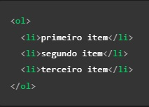

Vou te explicar o que são as tags HTML de uma maneira bem simples!
Quando você entra em um site e vê várias coisas diferentes, como texto, imagens e botões? Então, tudo isso é feito com a ajuda das tags.
As tags são comandos usados ao criar um site. Elas são como instruções que dizem para o navegador (como o Google Chrome, Firefox, Safari, etc.) o que mostrar na tela. Por exemplo, a tag <"p"> é usada para criar um parágrafo de texto, enquanto a tag <"img"> é usada para inserir uma imagem na página.
Existem muitas outras tags que você pode usar para criar um site. Algumas são usadas para criar links, outras para definir o estilo e aparência do site, e outras ainda para adicionar vídeos, músicas e animações.
Não se preocupe, pode paracer complicado no começo, mas com prática e paciencia, você vai dominar o uso das tags e criará sites incriveis
É possivel criar dois tipos de lista em HTML, as listas ordenas e as não ordendas.
As listas não ordenas não seguem uma ordem especifica, para criar uma você deve abrir a tags <"ul"> e adicionar os itens um por um dentro de uma tags <"li">

Já as Listas ordenadas seguem uma ordem especifica, para criar um você deve umas as tags <"ol"> e adicionar os itens um por um dentro de uma tags <"li">
